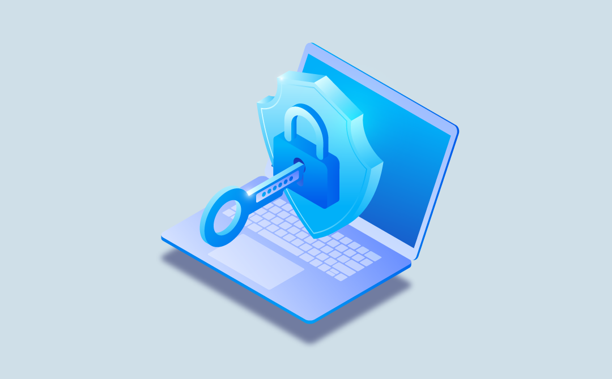

Com o avanço da tecnologia, é cada vez mais comum relatos de casos de dados vazados. Uma questão que afeta desde empresas de grande porte a casos pessoais no dia a dia. Por isso, surge a LGPD (Lei Geral da Proteção de Dados)
Tem como principal objetivo proteger os direitos fundamentais da liberdade e privacidade, regulamentando a proteção de dados de todos os cidadãos brasileiros. A lei define o que são dados pessoais e como devem ser manipulados e armazenados. Também tem como foco a criação de um cenário de segurança jurídica, com a padronização de regulamentos e práticas para promover a proteção aos dados pessoais de todo cidadão que esteja no Brasil, de acordo com os parâmetros internacionais existentes.

Quais as garantias da LGPD e por que utilizar?
• Solicitar que seus dados sejam excluídos de um determinado banco, transferir seus dados para outro fornecedor, revogar o consentimento;
Para as empresas, a aplicação da LGPD acresce mais responsabilidade em relação as atividades que devem ser feitas pela segurança e privacidade dos indivíduos.
Funcionamento da LGPD em empresas
• Estabelecer funções: É necessário algum responsável pela coleta de dados e para onde esses dados serão encaminhados. Neste caso, o controlador;
• Capacitar a equipe: Após definir as funções de cada um, é preciso manter a equipe informada sobre as regras, particularidades e procedimentos para que não haja furos no projeto;
• Mapear os dados: Classificar os dados pessoais, sensíveis e úteis para a empresas. Importante principalmente verificar se não há dados armazenados sem a autorização de alguma pessoa;
• Cuide da área jurídica: É preciso o controle de dados. Um profissional da área jurídica é importante para criar documentos que atendam a regulamentação, protegendo clientes e empresas.
Cuide dos seus dados pessoais!
A falta de conhecimento sobre como proteger seus dados pessoais, potencializa o roubo de dados e senhas pelos cibercriminosos. Levantamentos relatam que os brasileiros são as maiores vítimas mundiais de ataques para a obtenção de dados pessoais, o chamado phishing, prática que pode ser evitada com a devida proteção.
Senhas fortes
Uma das melhores medidas para ter uma segurança maior no mundo digital é criar uma senha forte para todas as contas que são criadas em diferentes plataformas. A consultoria observa que "quem cria senhas complexas têm contas mais seguras, mas ao mesmo tempo, tendem também a esquecê-las com mais frequência".
Verificação em duas etapas
Recomendado optar pela chamada autenticação de dois fatores, ou etapas. Nela, o usuário precisa digitar a senha que escolheu e passar por outra camada de segurança, como o uso de um código recebido no celular.
"Ao utilizar este método, os golpistas não poderão entrar nas contas online sem ter acesso ao segundo código, que pode ser enviado via SMS, gerado em app de autenticação ou se um segundo código mesmo", destaca a empresa Kaspersky.
Outras formas de proteções
Existem ainda aplicativos que buscam implementar medidas para proteger mais os dados dos seus usuários. Uma opção que ficou popular nos últimos anos é o Signal, que inclui criptografia de ponta a ponta para evitar acessos externos a mensagens e uma senha específica, um PIN, para recuperação de perfil e outras configurações.